library(tidyverse)
library(cmdstanr)
source("../functions/import_data.R")
source("../functions/prep_data.R")
source("../functions/compute_summary_stats.R")
source("../functions/plot_model.R")
source("../functions/plot_data.R")
source("../functions/post_functions.R")
source("../functions/sim_foraging_data.R")
options(mc.cores = 1, digits = 2)
# set global ggplot theme
theme_set(ggthemes::theme_tufte())3 Results using Existing Data
See the 1_fit_models folder for scripts that pre-compute everything
sf <- "1_fit_models/scratch"Which model fits best
We are evaluating using the following datasets:
datasets <- c("kristjansson2014plos", "tagu2022cog", "hughes2024rsos", "bhat2025") #, "clarke2022qjepOverall Prediction Accuracy
for (ds in datasets) {
plt <- plot_models_accuracy(ds, scratch_folder = sf) + theme_bw() + ggtitle(ds)
print(plt)
}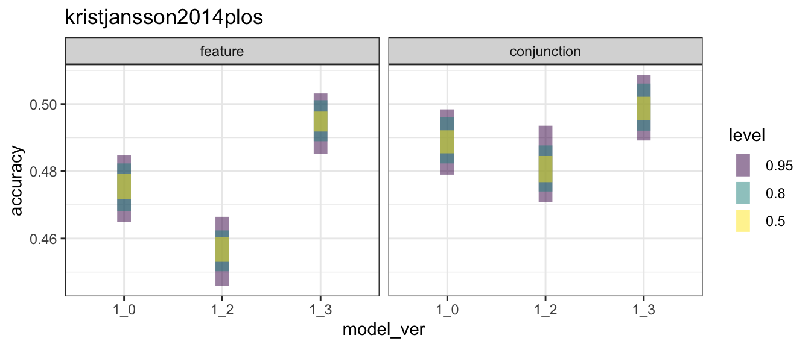
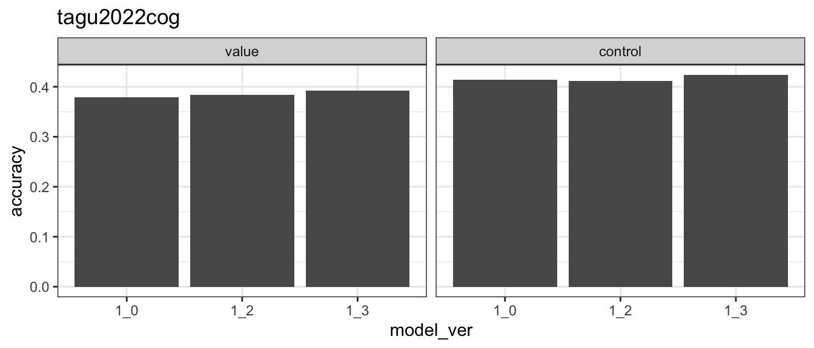
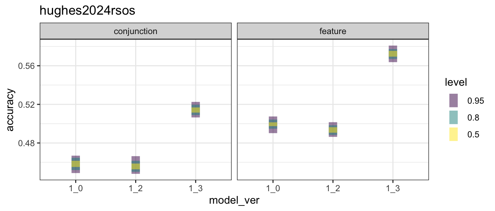
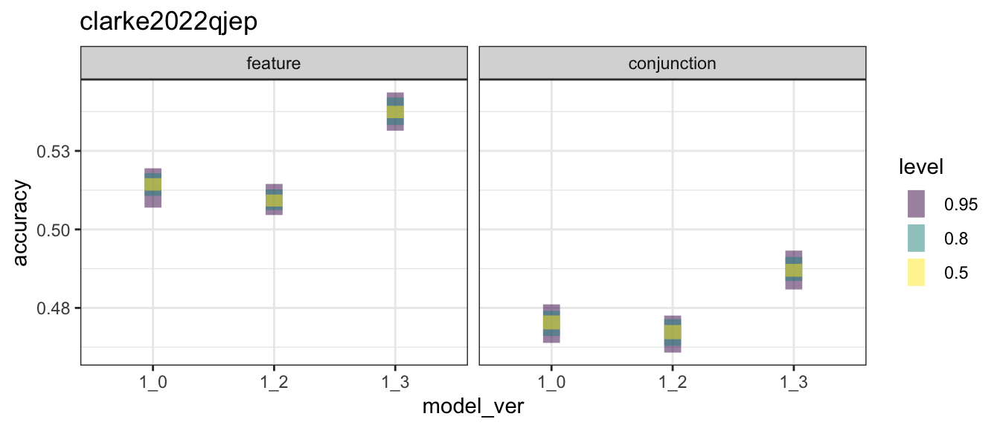
Create table for reporting in paper:
d_acc <- tibble()
d_chance <- tibble()
for (ds in datasets) {
# find list of models
files <- dir(paste0(sf, "/post/", ds))
files <- files[str_detect(files,"pred")]
d <- import_data(ds)
n_targets <- max((d$found$found))
baseline <- tibble(found = 1:n_targets, accuracy = 1/((n_targets + 1) - found))
d_chance <- bind_rows(d_chance, tibble(dataset = ds, chance = mean(baseline$accuracy)))
rm(d, baseline, n_targets)
for (ff in files) {
a <- readRDS(paste0(sf, "/post/", ds, "/", ff))
a$itemwise$model_ver <- a[[4]]
d_acc <- bind_rows(d_acc, a$itemwise %>% mutate(dataset = ds))
}
}
# create our table
d_acc %>%
group_by(dataset, model_ver, .draw) %>%
summarise(accuracy = mean(model_correct), .groups = "drop_last") %>%
summarise(accuracy = mean(accuracy), .groups = "drop") %>%
mutate(model_ver = str_replace(model_ver, "_", ".")) %>%
pivot_wider(names_from = model_ver, values_from = accuracy) %>%
full_join(d_chance, by = join_by(dataset)) %>%
knitr::kable()| dataset | 1.0 | 1.2 | 1.3 | chance |
|---|---|---|---|---|
| bhat2025 | 0.49 | 0.49 | 0.50 | 0.16 |
| hughes2024rsos | 0.48 | 0.47 | 0.54 | 0.18 |
| kristjansson2014plos | 0.48 | 0.47 | 0.50 | 0.11 |
| tagu2022cog | 0.40 | 0.40 | 0.41 | 0.08 |
The improvements in overall accuracy appear modest at best.
Per-Person Prediction Accuracy
However, we can see a larger improvement if we compare how well models do at predicting individuals.
v1 <- "1_0"
v2 <- "1_3"
for (ds in datasets) {
plt <- plot_model_accuracy_comparison(ds, v1, v2, scratch_folder = sf)
print(plt)
}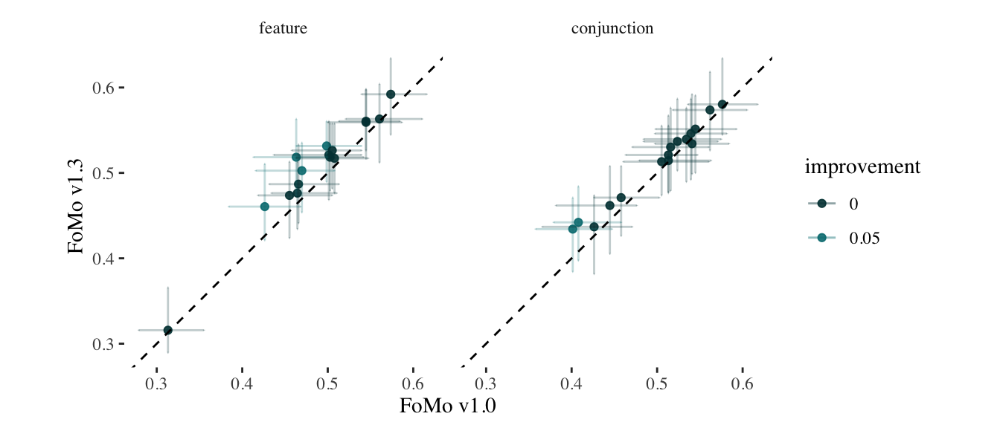
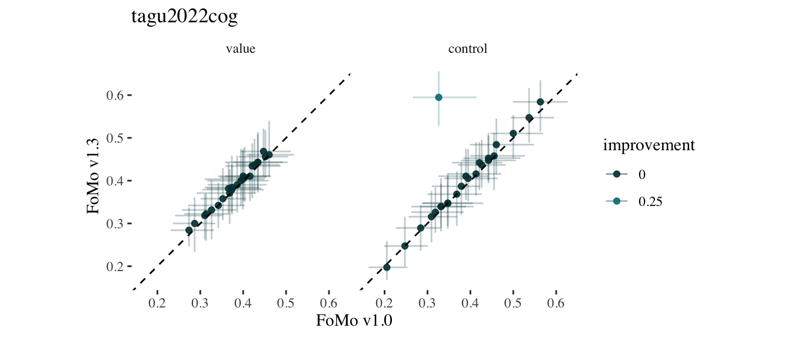
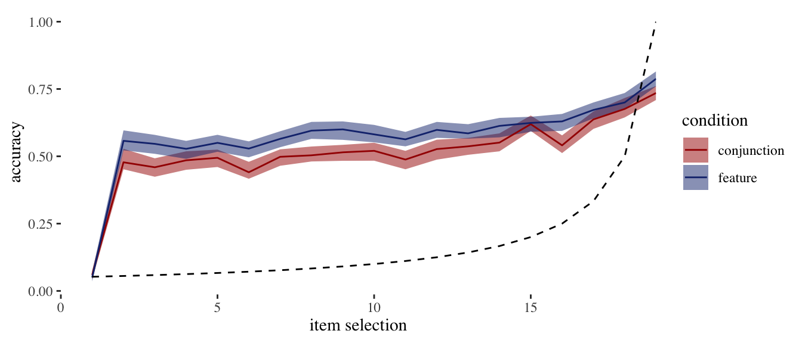
Warning: Removed 2 rows containing missing values or values outside the scale range
(`geom_point()`).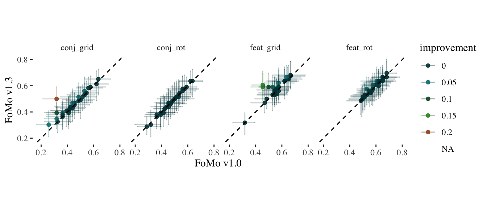
Accuracy throughout a trial
For model 1.3?
for (ds in datasets) {
folder <- paste0(sf, "/post/", ds, "/")
pred <- readRDS(paste0(folder, "pred_1_3.rds"))
pred$itemwise %>%
group_by(condition, found, .draw, person) %>%
summarise(person_acc = mean(model_correct), .groups = "drop_last") %>%
summarise(accuracy = mean(person_acc), .groups = "drop_last") -> acc
plt_acc <- plot_model_accuracy(acc)
print(plt_acc)
}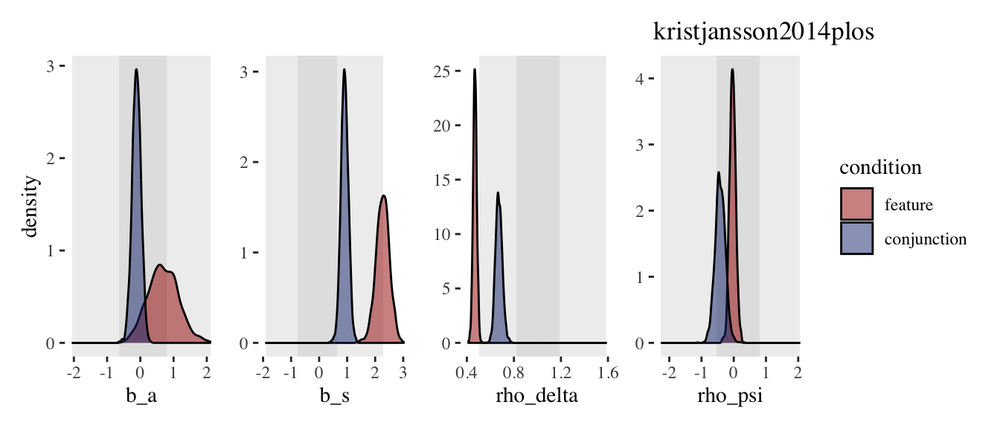
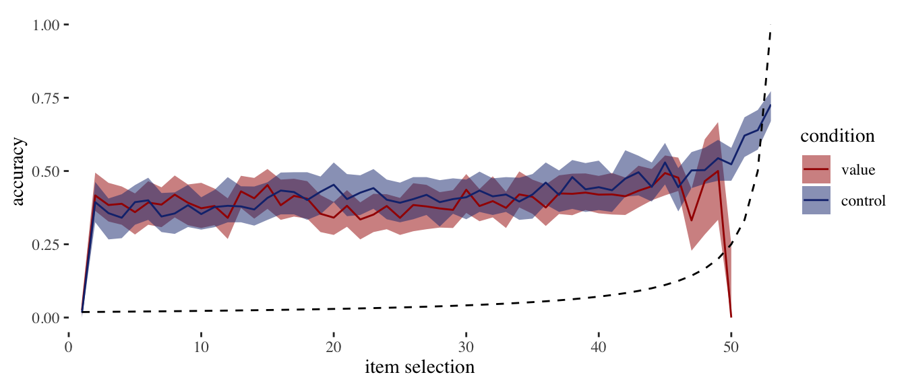
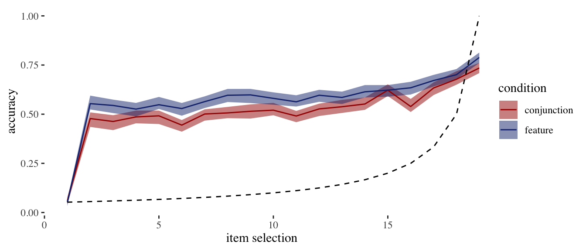
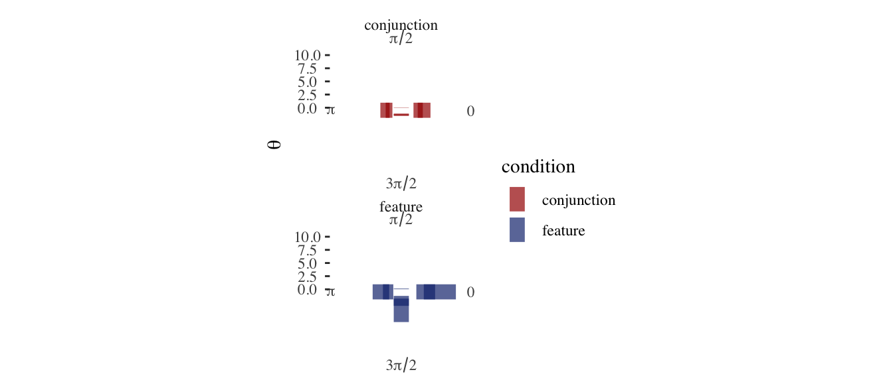
Generated Quantites
rl <- tibble()
for (ds in datasets) {
rl <- bind_rows(rl,
read_csv(paste0("1_fit_models/scratch/post/", ds, "/run_statistics.csv"),
show_col_types = FALSE) %>%
mutate(dataset = ds))
}
comp_corr <- function(df) {
r <- corr.test(df$value, df$observed)$estimate
}
# rl %>% pivot_longer(-c(person, condition, statistic, observed, dataset)) %>%
# group_split(dataset, statistic)Posterior Density
model_ver <- "1_3"Main parameters
for (ds in datasets) {
folder <- paste0(sf, "/models/", ds, "/fit/")
m <- readRDS(paste0(folder, model_ver, ".model"))
d <- import_data(ds)
post <- extract_post(m, d)
post_plt <- plot_model_fixed(post) + ggtitle(ds)
print(post_plt)
}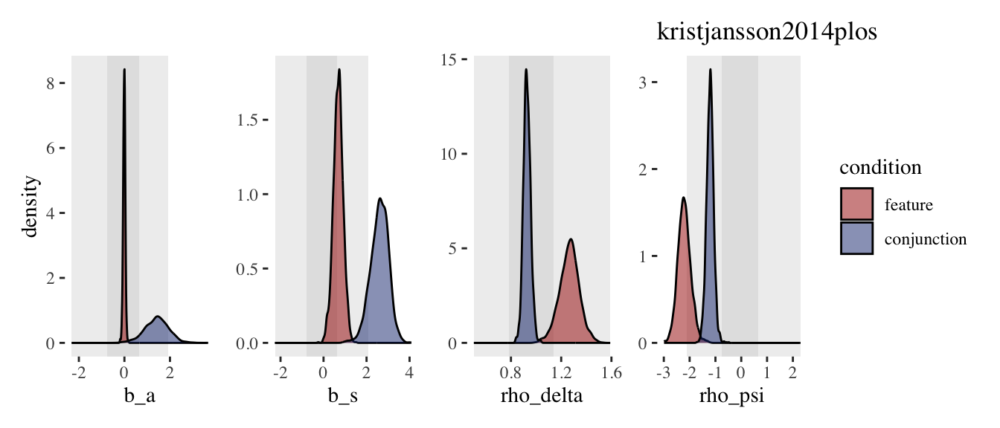
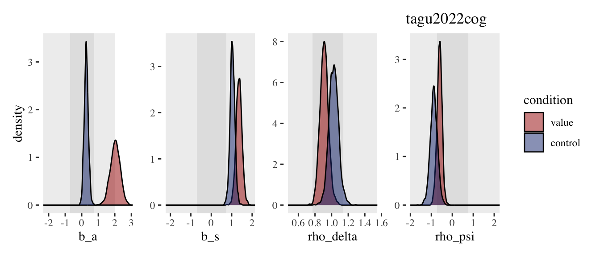
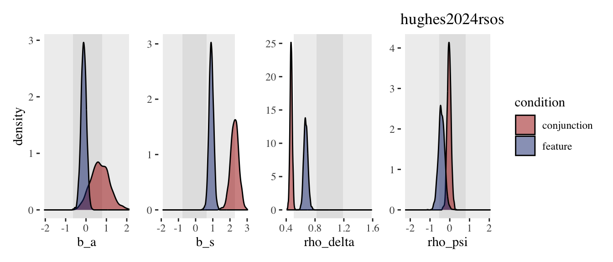
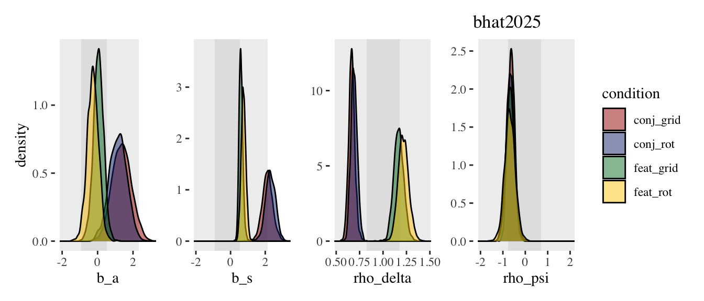
Directional parameters
for (ds in datasets) {
folder <- paste0(sf, "/models/", ds, "/fit/")
m <- readRDS(paste0(folder, model_ver, ".model"))
d <- import_data(ds)
post <- extract_post(m, d)
plt <- plot_model_theta(post, nrow = 1) + ggtitle(ds)
print(plt)
}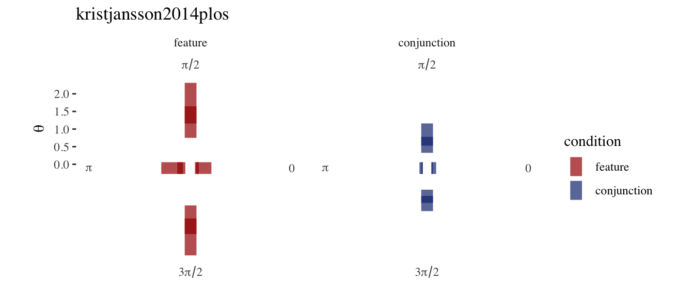
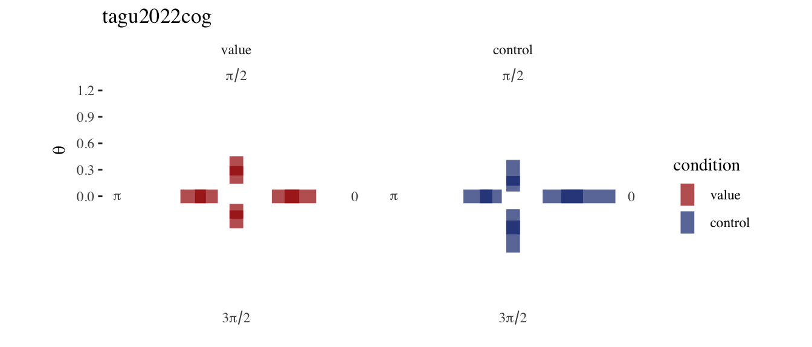
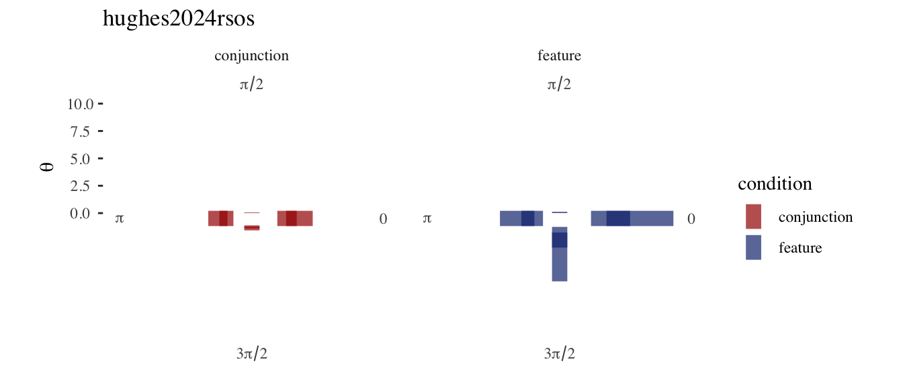
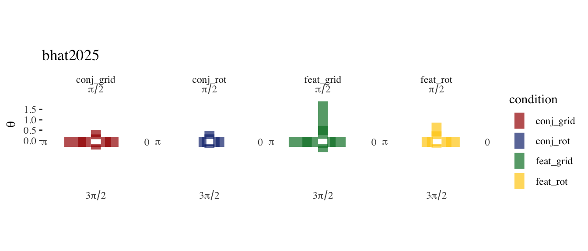